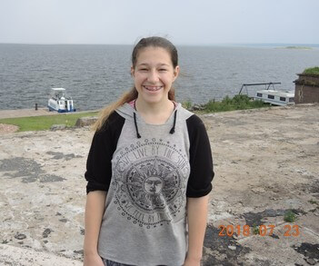

How It All Started
Growing up, I was always fascinated with the arts. Artist and singer were two of my top jobs that I wanted to do when I got older. But, at some point, I told myself that it wasn't realistic. Everywhere I looked, people told me it wasn't a viable career, it was unstable, not something you could succeed in life with. And so, I turned to more STEM type things, because I was told girls are wanted to make the field more diverse. I did enjoy some parts of it, but there wasn't any spark that made me want to continue.
Then, I got to a point where I took a dark turn. The best way to describe it is I got depressed. I didn't enjoy life. So many things seemed meaningless. But, in 7th grade, I started drawing, specifically mandalas. It all started with a birthday present for my mom and then it grew from there. At first it was slow. I drew little things just for fun. But soon, I discovered different ways to draw and started to draw more and more. I noticed I felt better. Lighter. Happier. Drawing became an outlet, a way to express for me. During 8th grade, I decided to take drawing seriously. I decided I wanted to pursue drawing as a career. It was met with a lot of rebuttal. I was told again of the hardships and many obstacles of pursuing a career in the arts. I was also told I was too young to decide something like that. But, I knew I was going to be told that. What I was surprised about was the amount of support I got. Family and friends telling me that I had the talent and determination to do whatever I put my mind to. And so, I pursued.
Now, I'm almost a young adult and I am going to college. I decided to major in a design degree, specifically Interactive Media Design, which combines art and technology when creating. I'm excited to see what the future holds and no matter what, I will always keep creating art.